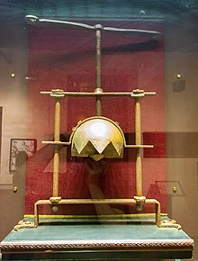

The head crusher was a form of execution used in the early mordern period
The victim would be placed in between the plate and the headcap, as the torturer turned the handle the vicitims head would slowly be crushed; almost always resulting in death.
